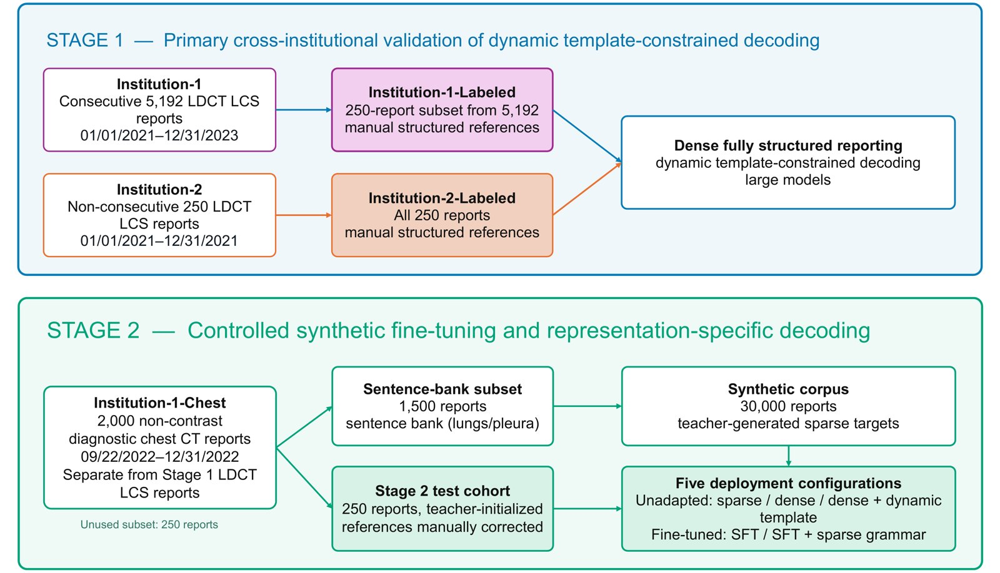
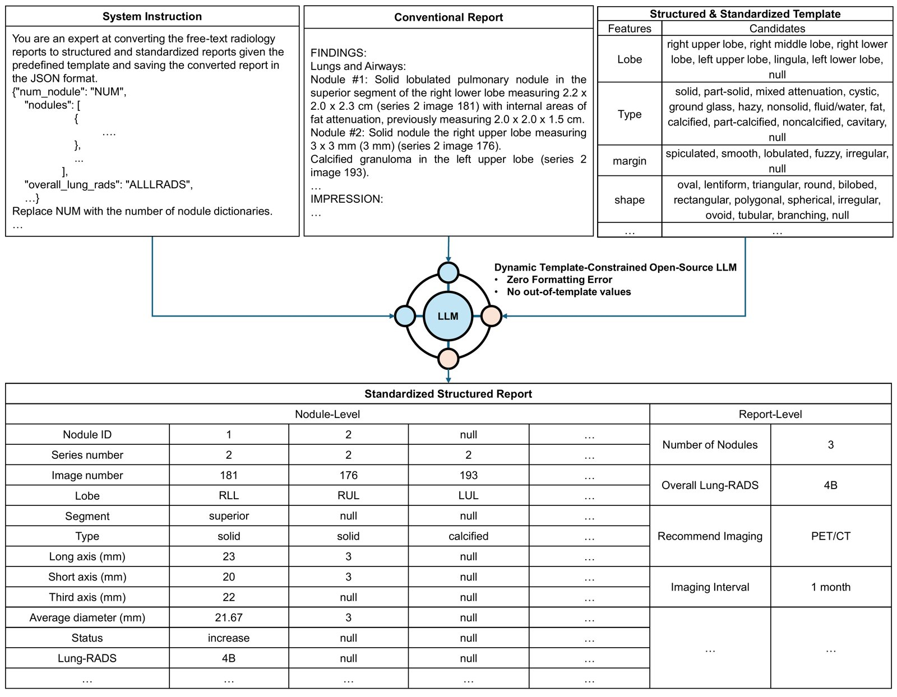
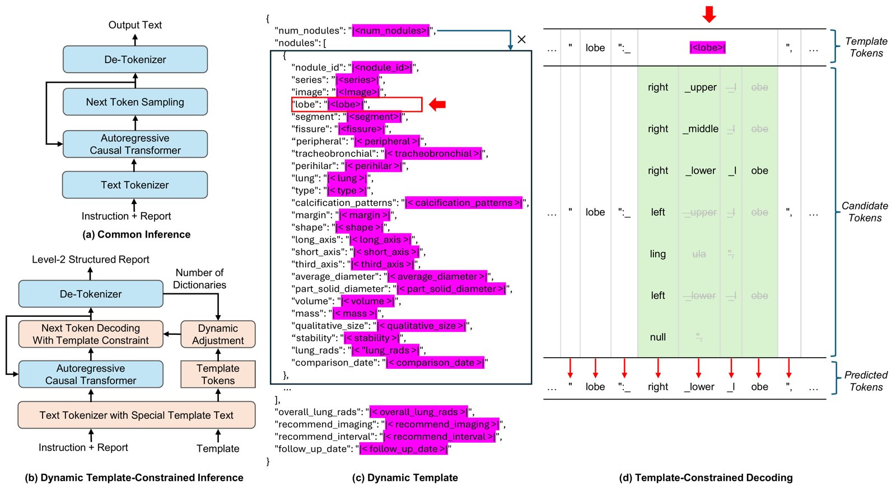
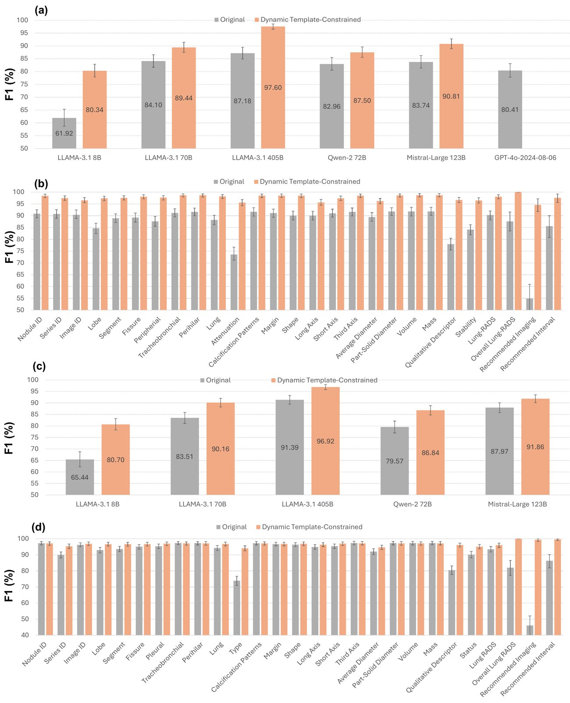
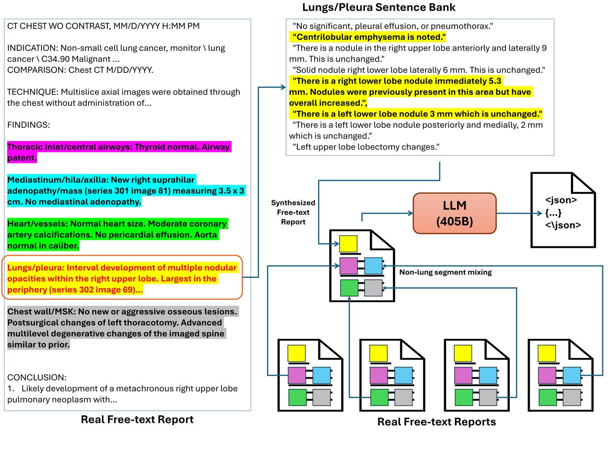
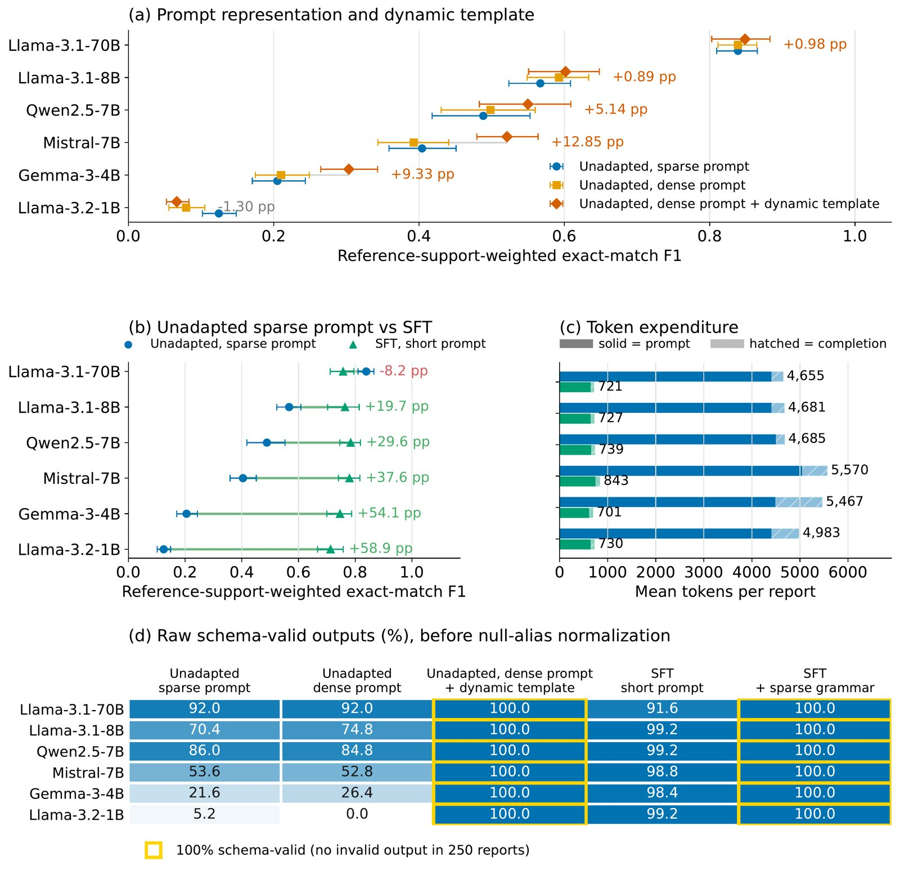

Overview
Most radiology reports are dictated as free text. That keeps radiologists fast, but it locks the findings inside prose: a nodule's size, location, attenuation, and stability cannot be searched, tracked, or counted without someone reading every report.
This work converts free-text lung cancer screening CT reports into fully structured lung-nodule reports without changing how radiologists dictate. A dynamic template-constrained decoder lets a locally hosted open-weight LLM write only values a radiologist-designed template allows, so every output is valid by construction. It was validated across two institutions and then extended with synthetic fine-tuning so compact models can do the job at a fraction of the token cost. The study covers 7,442 reports (2021–2023) under IRB approval at both institutions.
🗂️ Study Design

Figure 1: Stage 1 validates dynamic template-constrained decoding on two manually structured 250-report cohorts from separate institutions. Stage 2 is a separate controlled experiment on synthetic fine-tuning, using diagnostic chest CT reports that share no report with Stage 1.
🏗️ Framework and Template

Figure 2: A free-text report, a system instruction, and a standardized template go in; a structured report with nodule-level and report-level fields comes out. The system extracts what the radiologist documented and does not reinterpret images.
Two radiologists built a fixed 30-feature template: 25 nodule-level features (lobe, segment, type, margin, size, stability, Lung-RADS, and more), 4 report-level management features, and the nodule count. The decoder first predicts how many nodules the report describes, creates that many nodule entries, and then restricts every field to its allowed values (including null).

Figure 3: Standard LLM decoding vs. dynamic template-constrained decoding. The template's special slots (pink) are filled only from their candidate sets (green).
📊 Stage 1: Cross-Institutional Validation

Figure 4: Mean and feature-wise F1 with 95% CIs on both institutions, with and without constrained decoding.
- Best configuration (Llama-3.1-405B, constrained): F1 0.976 (95% CI 0.965–0.986) and 0.969 (0.958–0.980), with no formatting or out-of-template errors.
- Constrained decoding improved every open-weight model tested (Llama-3.1 8B/70B/405B, Qwen-2-72B, Mistral-Large-123B), by 4.5 to 18.4 percentage points on Institution 1 and 3.9 to 15.3 on Institution 2.
- Constrained Llama-3.1-405B beat GPT-4o by 17.2 points overall and on 26 of 27 features.
🔎 Large-Scale Statistics Without Manual Labeling
Structuring 5,192 consecutive screening reports made population-level analysis automatic. Nodules were more frequent in the upper lobes and the right lung, and women had more ground-glass nodules than men (all P < .01). Lung-RADS 2 accounted for 66.0% of reports and Lung-RADS 1 for 22.4%. 57.9% of nodules averaged under 6 mm, and 85.8% were stable relative to prior exams. These patterns match previously reported distributions.
⚙️ Stage 2: Synthetic Fine-Tuning for Compact Models

Figure 5: Real lungs/pleura sentences are recombined into new reports, and a 405B teacher produces sparse structured targets: 30,000 synthetic training reports in total.
| Model | Unadapted F1 | Fine-tuned F1 | Tokens / report |
|---|---|---|---|
| Llama-3.2-1B | 0.124 | 0.713 | 4,983 → 730 |
| Gemma-3-4B | 0.205 | 0.746 | 5,467 → 701 |
| Mistral-7B | 0.404 | 0.780 | 5,570 → 843 |
| Qwen2.5-7B | 0.488 | 0.784 | 4,685 → 739 |
| Llama-3.1-8B | 0.567 | 0.764 | 4,681 → 727 |
| Llama-3.1-70B (QLoRA) | 0.839 | 0.757 | 4,655 → 721 |
250-report test cohort; reference-support-weighted exact-match F1 with 10,000 report-level bootstrap resamples.

Figure 6: (a) Effect of the dynamic template on unadapted models; (b) unadapted vs. fine-tuned F1; (c) token use; (d) raw schema validity.
- Fine-tuning improved five of six models and narrowed F1 from 0.124–0.839 to 0.713–0.784, while cutting tokens per report by 84.2–87.2%.
- After fine-tuning, a lightweight sparse grammar changed F1 by less than one point but raised schema-valid outputs from 1,466 to 1,500 of 1,500. Once the model has learned the format, the constraint mainly guarantees valid structure.
⚠️ Limitations
- The unadapted Llama-3.1-70B is still numerically best. The benefit of fine-tuning is lower cost at comparable accuracy, not higher accuracy.
- Llama-3.1-70B was adapted with QLoRA while the smaller models were fully fine-tuned, so model size and adaptation method are confounded for that family.
- Retrospective study against report-derived references; effects on clinical workflow and patient outcomes were not assessed.
- The system structures what the radiologist wrote. It does not interpret images, revise Lung-RADS categories, or judge clinical correctness.
🚀 Key Contributions
- Dynamic template-constrained decoding for variable numbers of linked nodule objects, with zero formatting errors.
- Cross-institutional validation on 500 manually structured reports from two health systems.
- Automatic population-level nodule statistics from 5,192 consecutive screening reports.
- Synthetic fine-tuning that lets 1–8B models approach the strongest unadapted model at 84–87% lower token cost, running locally.
📝 Citation
@unpublished{tanveer2026lungnodule,
title = {Development and Validation of a Large Language Model for Generating Fully-Structured Lung Nodule Reports},
author = {Tanveer, Md Sayed and Islam, Md Zabirul and Niu, Chuang and Kaviani, Parisa and Lyu, Qing and
Kalra, Mannudeep K. and Whitlow, Christopher T. and Wang, Ge},
note = {Submitted to JAMIA. Equal contribution: M. S. Tanveer and M. Z. Islam},
year = {2026}
}